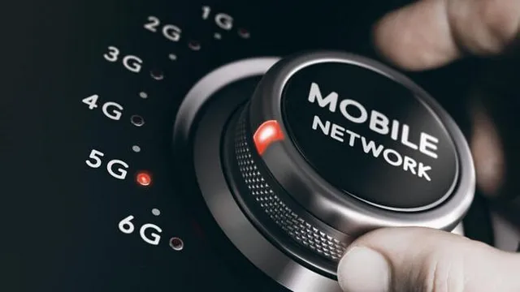

Dijital İletişimin Doğuşu: G Teknolojisi
İnsanlar her zaman iletişim kurma arzusuyla çeşitli girişimlerde bulunmuştur. Bugün cebimizdeki akıllı cihazlarla dünyanın öbür ucundaki bir kişiyle anında bağlantı kurabiliyor olmak, bu girişimlerin geldiği son noktayı temsil ediyor. 1G’den 5G’ye uzanan bu teknoloji serüveni, sadece telefon görüşmelerini değil, aynı zamanda tüm yaşam biçimimizi dönüştüren bir hikayeyi anlatıyor.
Bu yazımda, 1G’den başlayarak 5G’ye uzanan gelişmeleri irdeleyeceğim. Keyifli okumalar! Kablosuz telefon teknolojisindeki ilerlemeleri temsil eden G Teknolojsi, adını İngilizcedeki generation (nesil) kelimesinden
almıştır. İlk kez 1979 yılında Japonya’da 1G olarak kullanılmaya başlanmış olup 1982 yılında tam otomatik şebekelerin gelişmesi
ile dünyaya yayılmıştır.
Her yeni versiyonunun piyasaya sürülmesi yaklaşık 10 yıl süren bu teknoloji, her yenilenmesinde
bir önceki versiyonun üzerine eklemeler yaparak daha hızlı veri transferi ve daha gelişmiş ağ kapasitesiyle beraber daha kapsamlı
kullanım alanları sunuyor. Geçmişten günümüze gelişen bu versiyonlara bir göz atalım:

1G:
1G teknolojisi ilk kez mobil telefon sistemlerinde sesli aramalar için kullanılmıştır.
2G:
2G teknolojisi 1990'larda kullanılmaya başlanmıştır ve mobil telefonlar arası veri transferini sağlamasıyla beraber mesajlaşma (sms) kavramını ortaya çıkarmıştır.
3G:
3G teknolojisi 2000'li yılların başlarında internete erişim, videolu arama gibi imkanları ile kullanıma sunulmuştur.
4G:
4G teknolojisi 2010'lu yıllarda kullanılmaya başlanmış olup HD video ve ses içeriklerine, oyunlar ve diğer yüksek bant genişliği ihtiyacı olan uygulamaların kullanılmasını sağlamıştır.
5G:
5G teknolojisi henüz tam olarak yerleşmiş olmasa da 2019 yılında kullanıma sunulmuş olan günümüzdeki en son mobil iletişim teknolojisidir. Aynı anda daha fazla cihaza bağlanmayı olası hale
getiren bu teknoloji evler, araçlar, şehirleri birbirine bağlayabiliyor.(Internet of Things) Bu sayede de aslında çevresindeki birçok şeyle bağlantı kurması gereken otonom araçların trafikteki
kullanımını yaygınlaştırması amaçlanıyor.
5G teknolojisi 4G’den 60–120 kat arası daha düşük bir gecikme sağlayarak canlı yayınların kalitelerini ve internetten indirme hızını artırıyor.
Son zamanlarda hayatımıza giren sanal gerçeklik teknolojilerinin kullanılmasına da olanak sağlıyor.
5G teknolojisinin farklı ülkelerde nasıl kullanıldığına dair bazı örnekler:
Türkiye:
- Türkiye’deki ilk 5G ağı 2023 yılında hizmete girdi. Bu ağ, Turkcell, Vodafone ve Türk Telekom tarafından kuruldu.
- Türkiye’de 5G şebekesi hızla genişletiliyor. 2024 yılı sonuna kadar Türkiye’nin %80'inden fazlası 5G kapsama alanına sahip olması planlanıyor.
- Türkiye’de 5G teknolojisi için yeni uygulamalar geliştiriliyor. Bu uygulamalar arasında mobil oyun, sanal gerçeklik, uzaktan çalışma ve sağlık hizmetleri yer alıyor.
Güney Kore:
- Güney Kore, 2019 yılında ticari bir 5G ağı başlatan ilk ülkeydi.
- 5G, Güney Kore’de mobil oyun, sanal gerçeklik ve uzaktan çalışma gibi alanlarda kullanılıyor.
Çin:
- Çin, 5G’ye büyük yatırım yapan bir başka ülkedir.
- 5G, Çin’de akıllı şehirler, endüstriyel otomasyon ve otonom araçlar gibi alanlarda kullanılıyor.
Amerika Birleşik Devletleri:
- ABD de 5G ağları kurmaya çalışıyor, ancak bu konuda Güney Kore ve Çin’in gerisinde.
- 5G, ABD’de mobil oyun, sanal gerçeklik ve video akışı gibi bir dizi uygulama için kullanılıyor.
Hindistan:
- Hindistan, büyük bir nüfusa sahip bir gelişmekte olan ülkedir. 5G teknolojisi, Hindistan’da dijital uçurumu kapatmak ve kırsal alanlarda yaşayan insanların yaşamlarını iyileştirmenin bir yolu olarak görülüyor.
- 5G, Hindistan’da mobil bankacılık, eğitim ve sağlık gibi bir dizi uygulama için kullanılıyor.
Her yeni teknoloji gibi 5G teknolojisinin de bazı olumsuzlukları var. 5G ile yeni baz istasyonlarına, vericilere, uydulara vb. daha bir çok kurulum yapılması gerektiğinden bu
kurulumların insan sağlığına zararlı olabileceği yönünde uzmanlar uyarılarda bulunuyorlar.
F5 Network şirketinin başmühendisi Bart Salaets, 5G’nin riskleri hakkındaki görüşlerini şu şekilde dile getiriyor:
“5G yüzbinlerce yeni anten ve baz istasyonu kurulmasını gerektiriyor. Bunun sağlığımız üzerinde uzun vadeli etkilerinden endişe duyan çok sayıda insan var. Bunun yanında 5G bir önceki 4G’ye kıyasla daha yüksek güvenlik
riskleri içeriyor çünkü daha fazla arka kapı uygulaması ve açıkları mevcut.”
Bundan sonraki teknoloji 6G olacak ancak yetkililere göre 2030'dan önce bu durum olası gözükmüyor. Henüz üzerine konuşmak için erken olan bu teknolojiyi yetkililer şu şekilde açıklıyor: ‘’6G; tüketiciler, araçlar, cihazlar ve
çevredeki ortam arasında anında iletişime izin veren tamamen entegre ve internet tabanlı bir sistem olacaktır.’’
Bu alandaki geliştirme çalışmaları Ar-Ge şirketleri ve üniversiteler tarafından devam ediyor.
Umarım faydalı bir yazı olmuştur, okuduğunuz için teşekkür ederim. Yeni yazılarımda görüşmek dileğiyle!👋🏻